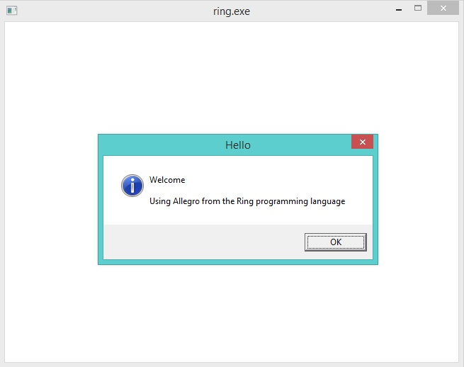
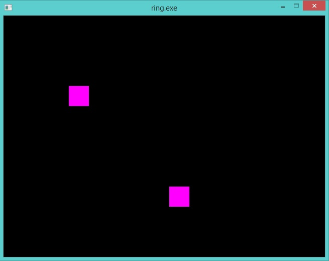
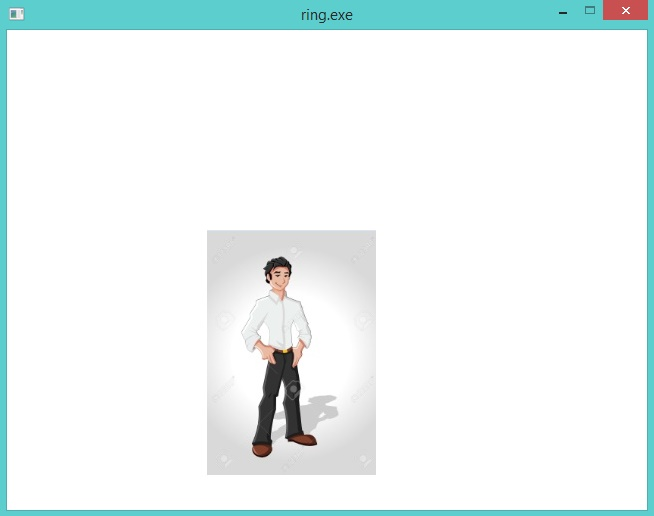
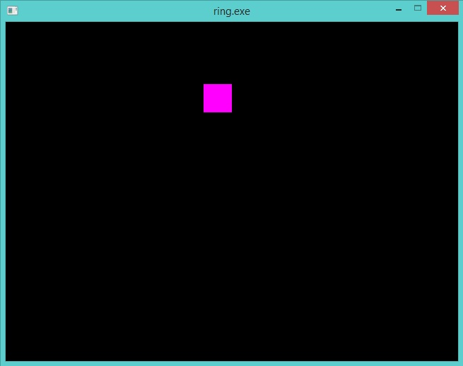
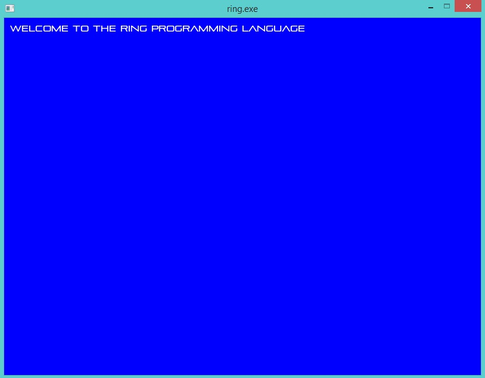
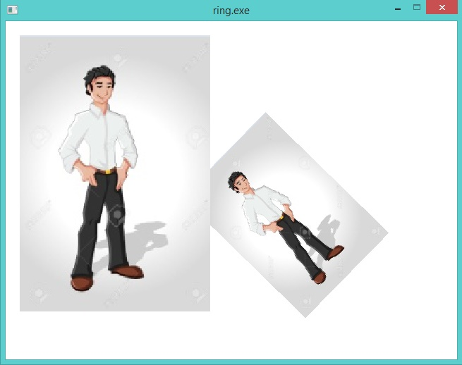
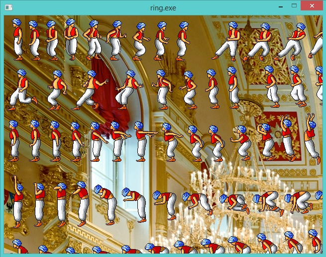

Graphics and 2D Games programming using RingAllegro¶
In this chapter we will learn how to use the allegro game programming library in our Ring applications.
We have the file gamelib.ring that load the DLL library that contains wrappers for the Allegro functions
Load "allegro.rh"
Loadlib("ring_allegro.dll")
The file gamelib.ring uses the Load instruction to execute the file allegro.rh which is a ring source code file contains constants to be used in our programs. Then using the function LoadLib() we can load the DLL library “ring_allegro.dll”.
To write portable code we can change the gamelib.ring to check the platform before loading the DLL/So file.
Drawing, Animation and Input¶
The next example uses the Allegro library for drawing, moving objects on the screen and getting input from the keyboard and the mouse.
Load "gamelib.ring"
al_init()
al_init_image_addon()
display = al_create_display(640,480)
al_show_native_message_box(display, "Hello", "Welcome",
"Using Allegro from the Ring programming language",
"", 0);
al_clear_to_color(al_map_rgb(0,0,255))
BOUNCER_SIZE = 40
bouncer_x = 10
bouncer_y = 20
bouncer = al_create_bitmap(BOUNCER_SIZE, BOUNCER_SIZE)
al_set_target_bitmap(bouncer)
al_clear_to_color(al_map_rgb(255,0,255))
for x = 1 to 30
bouncer_x += x
bouncer_y += x
al_set_target_bitmap(al_get_backbuffer(display))
al_clear_to_color(al_map_rgb(0,0,0))
al_draw_bitmap(bouncer, bouncer_x, bouncer_y, 0)
al_draw_bitmap(bouncer, 200+bouncer_x,200+ bouncer_y, 0)
al_flip_display()
al_rest(0.1)
next
al_clear_to_color(al_map_rgb(255,255,255))
image = al_load_bitmap("man2.jpg")
al_draw_bitmap(image,200,200,0)
al_flip_display()
al_rest(2)
event_queue = al_create_event_queue()
al_register_event_source(event_queue, al_get_display_event_source(display))
ev = al_new_allegro_event()
timeout = al_new_allegro_timeout()
al_init_timeout(timeout, 0.06)
FPS = 60
timer = al_create_timer(1.0 / FPS)
al_register_event_source(event_queue, al_get_timer_event_source(timer))
al_start_timer(timer)
redraw = true
SCREEN_W = 640
SCREEN_H = 480
BOUNCER_SIZE = 32
bouncer_x = SCREEN_W / 2.0 - BOUNCER_SIZE / 2.0
bouncer_y = SCREEN_H / 2.0 - BOUNCER_SIZE / 2.0
bouncer_dx = -4.0
bouncer_dy = 4.0
al_install_mouse()
al_register_event_source(event_queue, al_get_mouse_event_source())
al_install_keyboard()
al_register_event_source(event_queue, al_get_keyboard_event_source())
KEY_UP = 1
KEY_DOWN = 2
KEY_LEFT = 3
KEY_RIGHT = 4
Key = [false,false,false,false]
while true
al_wait_for_event_until(event_queue, ev, timeout)
switch al_get_allegro_event_type(ev)
on ALLEGRO_EVENT_DISPLAY_CLOSE
exit
on ALLEGRO_EVENT_TIMER
# Animation
if bouncer_x < 0 or bouncer_x > SCREEN_W - BOUNCER_SIZE
bouncer_dx = -bouncer_dx
ok
if bouncer_y < 0 or bouncer_y > SCREEN_H - BOUNCER_SIZE
bouncer_dy = -bouncer_dy
ok
bouncer_x += bouncer_dx
bouncer_y += bouncer_dy
# Keyboard
if key[KEY_UP] and bouncer_y >= 4.0
bouncer_y -= 4.0
ok
if key[KEY_DOWN] and bouncer_y <= SCREEN_H - BOUNCER_SIZE - 4.0
bouncer_y += 4.0
ok
if key[KEY_LEFT] and bouncer_x >= 4.0
bouncer_x -= 4.0
ok
if key[KEY_RIGHT] and bouncer_x <= SCREEN_W - BOUNCER_SIZE - 4.0
bouncer_x += 4.0
ok
redraw = true
on ALLEGRO_EVENT_MOUSE_AXES
bouncer_x = al_get_allegro_event_mouse_x(ev)
bouncer_y = al_get_allegro_event_mouse_y(ev)
on ALLEGRO_EVENT_MOUSE_ENTER_DISPLAY
bouncer_x = al_get_allegro_event_mouse_x(ev)
bouncer_y = al_get_allegro_event_mouse_y(ev)
on ALLEGRO_EVENT_MOUSE_BUTTON_UP
exit
on ALLEGRO_EVENT_KEY_DOWN
switch al_get_allegro_event_keyboard_keycode(ev)
on ALLEGRO_KEY_UP
key[KEY_UP] = true
on ALLEGRO_KEY_DOWN
key[KEY_DOWN] = true
on ALLEGRO_KEY_LEFT
key[KEY_LEFT] = true
on ALLEGRO_KEY_RIGHT
key[KEY_RIGHT] = true
off
on ALLEGRO_EVENT_KEY_UP
switch al_get_allegro_event_keyboard_keycode(ev)
on ALLEGRO_KEY_UP
key[KEY_UP] = false
on ALLEGRO_KEY_DOWN
key[KEY_DOWN] = false
on ALLEGRO_KEY_LEFT
key[KEY_LEFT] = false
on ALLEGRO_KEY_RIGHT
key[KEY_RIGHT] = false
on ALLEGRO_KEY_ESCAPE
exit
off
off
if redraw and al_is_event_queue_empty(event_queue)
redraw = false
al_clear_to_color(al_map_rgb(0,0,0))
al_draw_bitmap(bouncer, bouncer_x, bouncer_y, 0)
al_flip_display()
ok
callgc()
end
al_destroy_timer(timer)
al_destroy_allegro_event(ev)
al_destroy_allegro_timeout(timeout)
al_destroy_event_queue(event_queue)
al_destroy_bitmap(bouncer)
al_destroy_bitmap(image)
al_destroy_display(display)
Note
In the previous example we used the function callgc() which is a Ring function to force calling the Garbage collector inside the While/End loop.
Program Output:
At first the program display a messagebox
Then we see two rectangles are moving on the screen
Then we see an image displayed on the screen
Finally we have one rectangle, and we see it moving all of the time on the screen but we can control it using the Mouse and/or the Keyborad
Using TrueType Fonts¶
In this example we will see how to use TrueType Fonts *.ttf in our Games using Allegro
Load "gamelib.ring"
al_init()
al_init_font_addon()
al_init_ttf_addon()
display = al_create_display(800,600)
al_clear_to_color(al_map_rgb(0,0,255))
font = al_load_ttf_font("pirulen.ttf",14,0 )
al_draw_text(font, al_map_rgb(255,255,255), 10, 10,ALLEGRO_ALIGN_LEFT,
"Welcome to the Ring programming language")
al_flip_display()
al_rest(2)
al_destroy_display(display)
Screen Shot:
Playing Sound Files¶
The next example play a sound file
Load "gamelib.ring"
al_init()
al_install_audio()
al_init_acodec_addon()
al_reserve_samples(1)
sample = al_load_sample( "footstep.wav" )
sampleid = al_new_allegro_sample_id()
al_play_sample(sample, 1.0, 0.0,1.0,ALLEGRO_PLAYMODE_LOOP,sampleid)
display = al_create_display(640,480)
al_clear_to_color(al_map_rgb(0,0,255))
al_flip_display()
al_rest(10)
al_destroy_allegro_sample_id(sampleid)
al_destroy_sample(sample)
al_destroy_display(display)
al_exit()
Scaling and Rotating Images¶
The next example display and rotate an image
Load "gamelib.ring"
al_init()
al_init_image_addon()
display = al_create_display(640,480)
al_set_target_bitmap(al_get_backbuffer(display))
al_clear_to_color(al_map_rgb(255,255,255))
image = al_load_bitmap("man2.jpg")
al_draw_rotated_bitmap(image,0,0,250,250,150,0)
al_draw_scaled_bitmap(image,0,0,250,250,20,20,400,400,0)
al_flip_display()
al_rest(2)
al_destroy_bitmap(image)
al_destroy_display(display)
Screen Shot:
Display Transparent Image¶
The next example display image with white background on another image
Load "gamelib.ring"
al_init()
al_init_image_addon()
display = al_create_display(640,480)
imageback = al_load_bitmap("palace.jpg")
al_draw_bitmap(imageback,0,0,0)
image = al_load_bitmap("man4.png")
al_convert_mask_to_alpha(image,al_map_rgb(255,255,255))
al_draw_bitmap(image,0,0,0)
al_flip_display()
al_rest(10)
al_destroy_bitmap(image)
al_destroy_display(display)
Screen Shot:
Using Threads¶
In this example we will learn how to users threads from the Allegro library
Load "gamelib.ring"
o1 = new mythreads
Func Main
al_init()
for k = 1 to 5
al_create_thread("o1.thread1()")
al_create_thread("o1.thread2()")
al_create_thread("o1.thread3()")
next
al_rest(2)
Class Mythreads
cAppName = "Threads Application"
Func Thread1
for x = 1 to 5
see x + nl
next
See 'Thread(1) : Application Name : ' + cAppName + nl
Func Thread2
for x = 1 to 5
see '*****' + x + nl
next
See 'Thread(2) : Application Name : ' + cAppName + nl
Func Thread3
for x = 1 to 5
see '!!!!' + x + nl
next
See 'Thread(3) : Application Name : ' + cAppName + nl
Output:
1
2
3
4
5
Thread(1) : Application Name : Threads Application
*****1
*****2
*****3
*****4
*****5
Thread(2) : Application Name : Threads Application
!!!!1
!!!!2
!!!!3
!!!!4
!!!!5
Thread(3) : Application Name : Threads Application
1
2
3
4
5
Thread(1) : Application Name : Threads Application
!!!!1
!!!!2
!!!!3
!!!!4
!!!!5
Thread(3) : Application Name : Threads Application
*****1
*****2
*****3
*****4
*****5
Thread(2) : Application Name : Threads Application
*****1
*****2
*****3
*****4
*****5
Thread(2) : Application Name : Threads Application
!!!!1
!!!!2
!!!!3
!!!!4
!!!!5
Thread(3) : Application Name : Threads Application
1
2
3
4
5
Thread(1) : Application Name : Threads Application
*****1
*****2
*****3
*****1
*****4
*****2
!!!!1
*****5
*****3
1
!!!!2
Thread(2) : Application Name : Threads Application
1
*****4
!!!!1
2
!!!!3
!!!!4
*****5
!!!!2
3
2
!!!!5
Thread(2) : Application Name : Threads Application
!!!!3
4
3
Thread(3) : Application Name : Threads Application
!!!!4
5
4
!!!!5
Thread(1) : Application Name : Threads Application
5
Thread(3) : Application Name : Threads Application
Thread(1) : Application Name : Threads Application